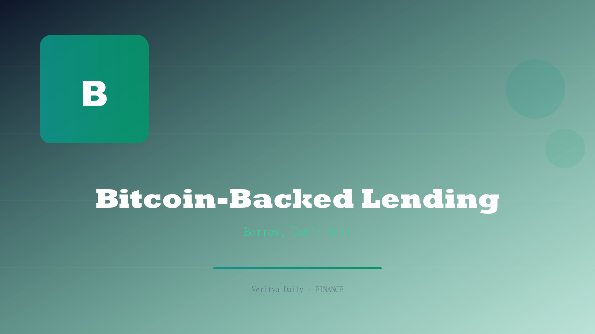

Bitcoin-Backed Lending Goes Institutional

Key Takeaways
- Public companies are borrowing against BTC instead of selling to fund acquisitions and operations
- Strategy sold 1,690 BTC and raised $653M from MSTR shares in a blended capital approach
- Crypto bank Erebor saw deposits surge $1.1B to reach $4.6B in just months
- Bitcoin is maturing as collateral, with institutional lending infrastructure rapidly developing
- The trend validates BTC as a productive asset rather than just a speculative holding
Table of Contents
The Rise of Bitcoin-Backed Corporate Lending
A quiet but profound shift is taking place in how public companies manage their bitcoin treasuries. Rather than selling BTC to raise capital — which triggers tax liabilities and forfeits future upside — an increasing number of public companies are borrowing against their bitcoin holdings to fund operations, acquisitions, and strategic investments.
This trend represents a maturation of bitcoin as a financial asset. For years, critics argued that bitcoin was unproductive — it generates no cash flows, no dividends, no interest. Bitcoin-backed lending directly addresses this criticism by turning BTC into a yield-generating collateral asset that can unlock liquidity without requiring disposal.
The mechanics are straightforward: a company deposits bitcoin with a lending institution, receives a fiat loan at a loan-to-value (LTV) ratio typically ranging from 30% to 50%, and uses the proceeds for corporate purposes. The bitcoin remains on the balance sheet, and if its price appreciates, the borrower benefits from the upside. If the price falls below a maintenance margin, the borrower must post additional collateral or face liquidation.
"Bitcoin-backed lending transforms BTC from a passive store of value into productive collateral. This is the infrastructure layer that makes bitcoin a viable corporate treasury asset." — Crypto lending desk head
Strategy's Blended Approach: Selling BTC + Raising $653M
Strategy (formerly MicroStrategy), the most prominent corporate bitcoin holder, provided a fascinating case study in capital management this quarter. The company sold 1,690 BTC while simultaneously raising $653 million through MSTR share offerings. This blended approach reveals a sophisticated treasury management strategy.
The BTC sale was not a capitulation — it was a tactical move. Strategy used the proceeds to fund operations and potential acquisitions, while the $653M raised through equity issuance strengthened the balance sheet. The net effect is a company that is diversifying its capital sources while maintaining its core bitcoin thesis.
| Action | Amount | Purpose |
|---|---|---|
| BTC Sold | 1,690 BTC | Fund operations and acquisitions |
| Shares Issued | $653M raised | Balance sheet strengthening |
| Remaining BTC Holdings | Substantial (largest corporate holder) | Long-term treasury reserve |
| Strategy | Blended capital approach | Diversify funding sources |
What's notable is that Strategy chose to sell a relatively small amount of BTC (1,690 coins) rather than liquidate a larger position. This suggests that the company views bitcoin as a long-term holding and prefers to access capital through other means — including borrowing against its BTC trove — rather than selling at scale.
Crypto Bank Erebor: Deposits Surge to $4.6B
Further evidence of the institutionalization of bitcoin-backed finance comes from Erebor, the crypto-focused bank that has seen explosive deposit growth. Erebor's deposits grew by $1.1 billion to reach $4.6 billion in just months, a trajectory that would be remarkable for any bank, let alone one focused on digital assets.
Erebor's deposit growth signals that institutional capital is flowing into crypto banking at an accelerating pace. These deposits are not just passive holdings — they are the raw material for lending operations. Banks like Erebor take in crypto-denominated deposits and use them to fund bitcoin-backed loans to corporate borrowers, earning a spread in the process.
The $4.6B deposit base gives Erebor significant lending capacity:
- Corporate BTC-backed loans: Lending fiat against bitcoin collateral to public and private companies
- Institutional custody: Providing regulated custody for corporate bitcoin treasuries
- Yield products: Offering yield on bitcoin deposits through lending and staking
- Settlement services: Acting as a settlement layer for institutional crypto transactions
The rapid growth of Erebor's deposit base also suggests that institutional trust in crypto banking is improving. After the collapses of 2022-2023 (FTX, BlockFi, Celsius), institutional capital was hesitant to engage with crypto financial institutions. Erebor's growth indicates that confidence is returning — and it's returning at scale.
Why Companies Prefer Lending Over Selling
The economic logic behind bitcoin-backed lending is compelling for any company that holds BTC as a long-term treasury asset. Here's why companies are increasingly choosing to borrow against bitcoin rather than sell it:
Tax efficiency: Selling bitcoin triggers a taxable event — capital gains taxes can consume 20% or more of the proceeds. Borrowing against bitcoin creates no taxable event. The loan proceeds are not income; they are debt. This alone can save millions in taxes for large holders.
Upside preservation: When you sell bitcoin, you forfeit all future price appreciation. When you borrow against it, you retain ownership and benefit from any price increase. For companies that are bullish on bitcoin's long-term trajectory, this is the dominant consideration.
Balance sheet optimization: Bitcoin remains on the balance sheet as an asset, and the loan appears as a liability. This can actually improve financial ratios compared to selling bitcoin and converting to cash, particularly if the bitcoin is appreciating faster than the interest rate on the loan.
Speed and flexibility: Bitcoin-backed loans can be structured and funded much faster than equity raises or traditional debt issuances. For companies that need capital quickly — for an acquisition opportunity, for example — BTC-backed lending offers a rapid execution path.
Signal effect: Selling bitcoin can be interpreted by the market as a lack of conviction. Borrowing against it signals that the company believes in bitcoin's long-term value enough to use it as collateral — a bullish signal for both the stock and the asset.
The Institutional Infrastructure Behind BTC Lending
The growth of bitcoin-backed lending has been enabled by a parallel build-out of institutional infrastructure. Five years ago, borrowing against bitcoin meant dealing with unregulated offshore platforms — a risky proposition. Today, the landscape looks very different.
Regulated crypto banks like Erebor provide FDIC-insured fiat rails alongside crypto custody, enabling seamless BTC-backed lending within a regulated framework. Prime brokers have developed bitcoin collateral management desks, allowing hedge funds and corporations to pledge BTC for margin and financing. Custody providers like Coinbase Custody and Fidelity Digital Assets provide institutional-grade storage that serves as the foundation for lending arrangements.
The infrastructure now supports a range of lending structures:
- Term loans: Fixed-rate, fixed-term loans with BTC as collateral
- Revolving credit facilities: Flexible lines of credit backed by BTC portfolios
- Synthetics: BTC-backed stablecoin issuance for on-chain liquidity
- Structured products: BTC-collateralized notes and certificates of deposit
This infrastructure layer is what makes the trend sustainable. It's no longer about a few crypto-native companies borrowing against BTC — it's about a fully developed lending market with regulated participants, standardized documentation, and institutional risk management.
Risks, Regulation, and the Road Ahead
While the trend toward bitcoin-backed lending is unmistakable, it is not without risks. Investors and market participants should be aware of the potential pitfalls that could slow or reverse the trend.
Liquidation risk: Bitcoin is notoriously volatile. A sharp price decline can trigger margin calls and forced liquidations, creating a cascading effect — exactly what happened during the 2022 crypto credit crisis. Lenders have become more conservative with LTV ratios, but the risk remains.
Regulatory uncertainty: While crypto banking has made strides, the regulatory landscape remains fragmented. Different jurisdictions treat BTC-backed lending differently, and a crackdown in any major market could disrupt the ecosystem.
Counterparty risk: The history of crypto lending is littered with failures — BlockFi, Celsius, and others. While regulated banks like Erebor represent a step forward, counterparty risk in crypto lending remains higher than in traditional lending markets.
Concentration risk: If a few large holders default simultaneously — perhaps triggered by a macro shock — the lending ecosystem could face systemic stress. This is the crypto equivalent of the "contagion" risk that regulators worry about in traditional finance.
Despite these risks, the trajectory is clear. Bitcoin-backed lending is moving from the margins to the mainstream, driven by genuine corporate demand, improving infrastructure, and the simple economic logic that borrowing against an appreciating asset is more rational than selling it. As more companies discover that their bitcoin treasuries can be productive assets — not just passive holdings — this trend will accelerate.
For investors, the key takeaway is this: companies that hold significant bitcoin and have access to BTC-backed lending infrastructure have a structural advantage in capital allocation. They can access liquidity without diluting shareholders or selling their most promising asset. That's a powerful position to be in — and it's one more reason why bitcoin on the balance sheet is becoming a strategic imperative rather than a speculative bet.
Disclaimer: This article is for informational purposes only and does not constitute financial advice. Bitcoin-backed lending involves significant risks, including liquidation and counterparty risk. Readers should conduct their own research and consult with a licensed financial advisor before making any financial decisions.